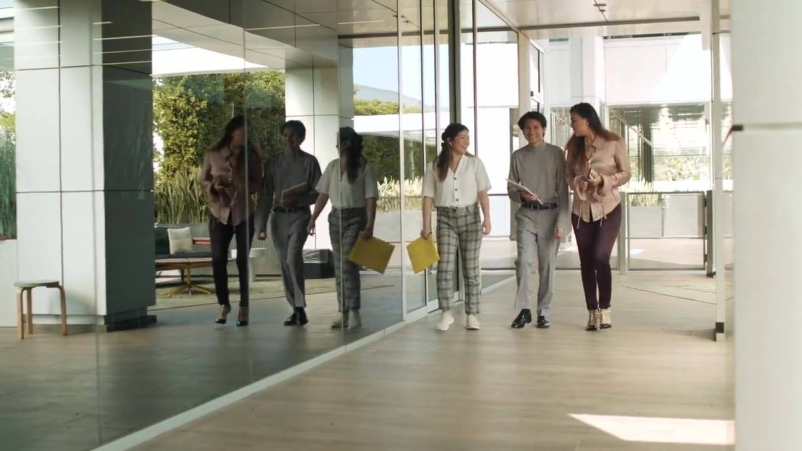
Integrated facility management · Delhi NCR · Since 2008
Facilities kept impeccable, quietly.
Security, housekeeping and every soft service in between — delivered by trained, badged and supervised people, for offices, hospitals, hotels, malls, factories and residential communities.
- Security
- Housekeeping
- Facade
- Horticulture
- Pantry
- Events
- 2008Serving Delhi NCR since
- 90+Organisations served across ten industries
- 09Service lines under one contract
- 100%Staff approved and badged before deployment
- FreeOn-site survey before you commit to anything
Who we are
One partner for every soft service on your site.
COPS Skilled Services Private Limited places trained, screened and supervised people across the full range of facility services — so your own teams can give their attention to their own work.
- Badged before deployment. Nobody reaches your site without COPS management's approval.
- Supervised by our own people. Field supervisors trained within COPS hold the standard daily.
- Planned around your occupancy. Deployment follows your working pattern, not a fixed morning shift.
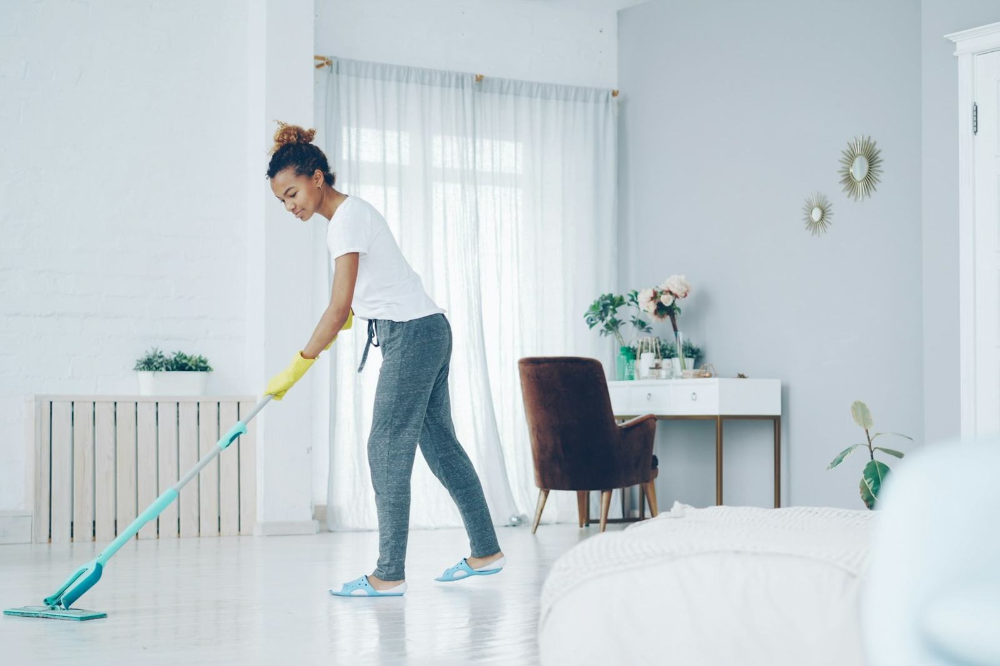
Trained & supervised
Services
Everything a building needs to run beautifully.
01Security & manpower
Badged, trained security and facility officers for sites and events.
Explore 02
02Housekeeping & soft services
Trained, supervised housekeeping manpower maintaining your facility through working hours.
Explore 03
03Facade & glass cleaning
External facade and glass cleaning by trained rope-access and gondola crews.
Explore 04
04Deep cleaning & machines
Periodic mechanised deep cleaning with our own equipment.
Explore 05
05Horticulture & landscaping
Upkeep of green areas, indoor plants and seasonal arrangements.
Explore 06
06Waste collection & segregation
Disciplined collection, segregation and disposal to your designated points.
Explore 07
07Pantry & cafeteria support
Pantry staffing and cafeteria support through working hours.
Explore 08
08Event manpower
Manpower that scales for exhibitions, AGMs and corporate events.
ExploreEquipment & consumables
Supply of techno-mechanical equipment and consumables on efficient terms. Deep-cleaning machines for the entire gamut of soft services, reconciled monthly.
ExploreIndustries
Every site is different. We plan for yours.
Choose your type of facility to see how we would approach it — and who we already work with there.
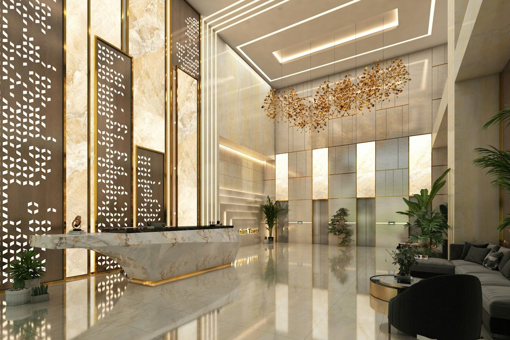
Invisible to your teams, obvious to your visitors
Corporate and IT/ITeS workplaces are judged on the details — washrooms through the day, pantries at peak hours, meeting rooms reset between bookings, and floors that stay presentable while people are working on them. Our deployment is built around your occupancy pattern rather than a fixed morning shift.
- ETT Group (Delhi & NCR)
- Noida Towers Pvt Ltd (IL&FS Group)
- Cushman & Wakefield
- QX Global Services LLP
- Biz2X Platform Pvt Ltd
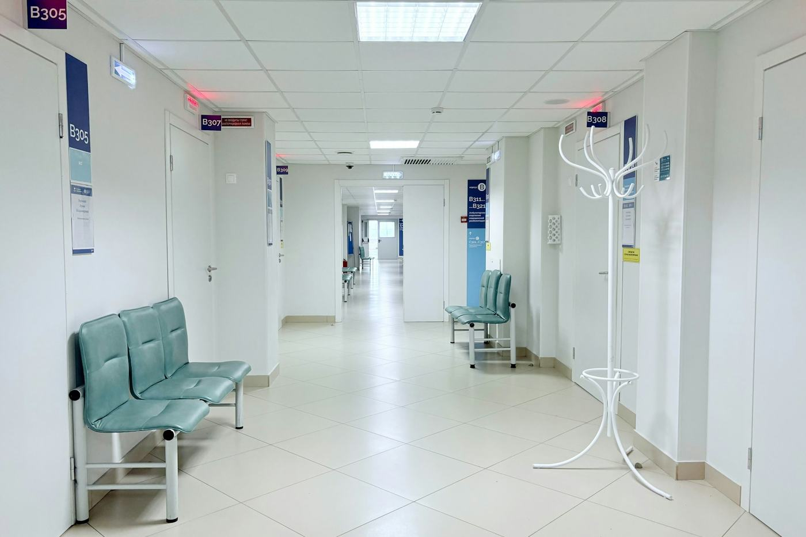
Housekeeping that sits inside your infection control
In a healthcare setting, housekeeping sits inside your infection-control posture. We deploy colour-coded cleaning to prevent cross-contamination between zones, maintain documented frequency schedules for high-touch surfaces, keep housekeeping staff briefed on segregation discipline at biomedical waste collection points, and hold round-the-clock cover so that OT, ICU and patient areas are never left uncovered between shifts.
- Batra Hospital & Medical Research Centre
- Yatharath Hospital, Greater Noida
- J.S. Hospitals, Noida
- Empathy Medicare (Dr Lal PathLabs, Sector 110)
- Dr Tetoria's Clinic
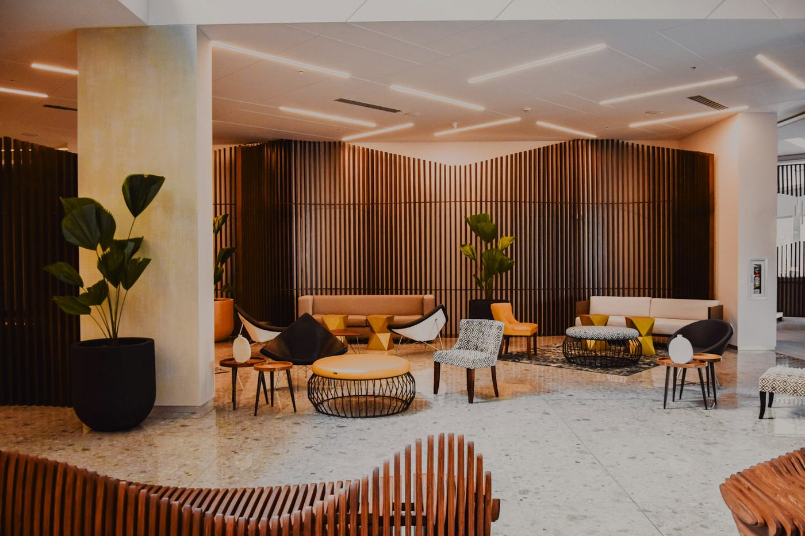
Every member of the team is guest-facing
In hospitality, housekeeping is guest-facing by definition. We select for grooming, bearing and conduct as carefully as for skill, hold public areas to a continuous standard rather than a scheduled one, and keep a rapid-response presence through peak arrival and banquet hours.
- Express Portico Hotel, Surajkund, Delhi
- Divine Hotels Pvt Ltd, Dwarka, Delhi
- Siesta Restaurants & Catering Services Pvt Ltd
- Hampton
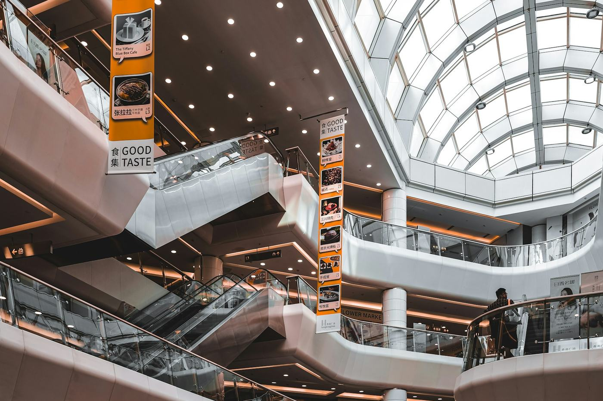
Floors and washrooms that hold up at peak footfall
High-footfall retail exposes housekeeping quickly. We plan headcount against your actual footfall curve rather than a flat roster, run continuous floor care and washroom turnaround through peak hours, and keep entrance glass and facade frontage presentable as a standing task rather than a periodic one.
- Times Square Mall
- R R Trends Pvt Ltd
- Frequent Bakes
- Lens & Groove Pvt Ltd
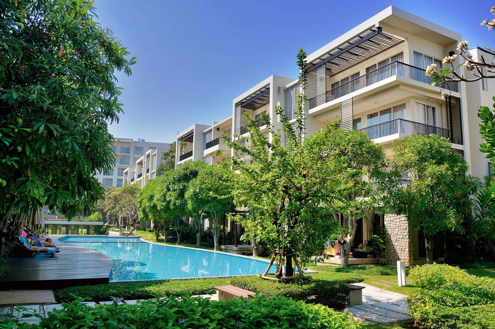
Consistency residents notice
In a residential community the housekeeping team interacts with residents daily, so conduct and consistency matter as much as the work itself. We cover common areas, lobbies, staircases, lifts and basements on a fixed published schedule, maintain landscaped and green areas, and run disciplined waste segregation and collection to your designated points.
- Antriksh Apartments, Indirapuram
- Shipra Suncity, Ghaziabad
- Pan Oasis
- Regalia Heights
- Windsor Park
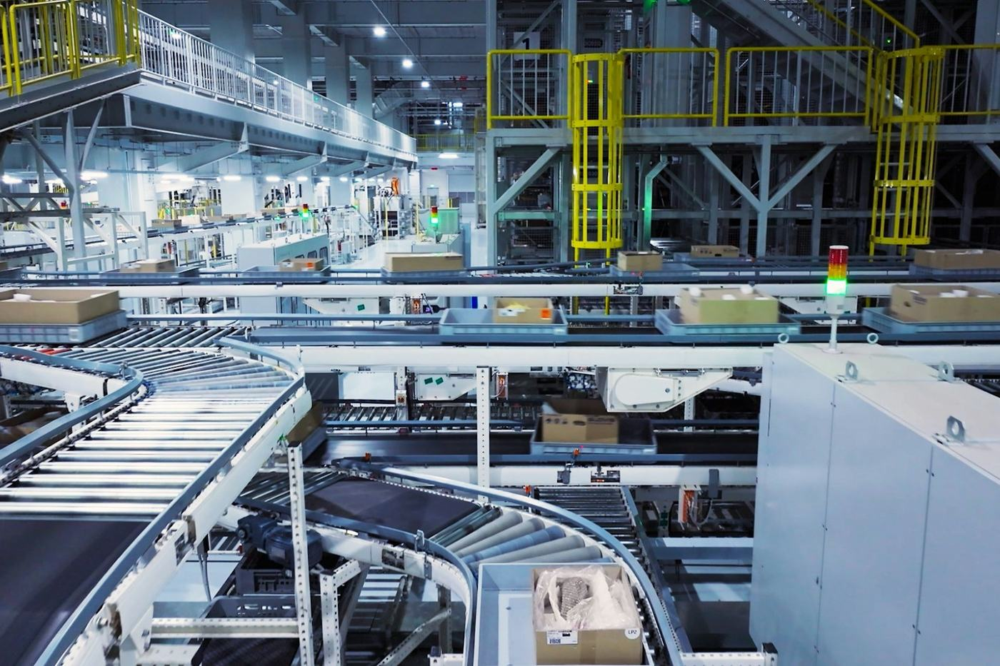
Working alongside production, never around it
On an industrial site, housekeeping runs alongside production and has to respect it. We work to shop-floor and 5S discipline, plan cleaning cycles around your shift changeovers, and brief staff on site safety requirements and restricted-area protocol before deployment.
- Dixon
- Sunlord Industries
- Biodeal Pharmaceuticals Ltd
- Incraft Exporters Pvt Ltd
- Fortune Marketing Pvt Ltd / Tecniqua India Pvt Ltd
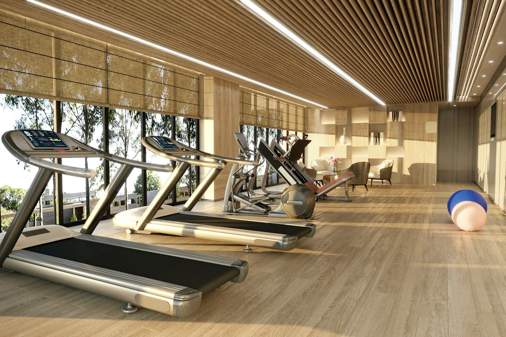
What members notice first
Members judge a fitness facility on its changing rooms and its equipment. We run equipment sanitisation on a timed cycle through operating hours, hold showers, wet areas and changing rooms to a continuous standard, and keep a visible housekeeping presence through your peak morning and evening slots.
- Gold's Gym, Sector 128, Noida
- Fit Cube Gym, Sector 104
- MOF Gym (Ministry of Fitness), 3 branches, Noida
- SVP Fitness Pvt Ltd
- Climb City Rock Climbing
Fitted around the timetable
On a campus, housekeeping has to fit around teaching hours rather than interrupt them. We schedule classroom and washroom cycles against your timetable, hold common areas and assembly spaces to a continuous standard, and use vacation periods for deep-cleaning and restorative work.
- NDIM (New Delhi Institute of Management)
- Institute of Driving and Traffic Research (IDTR Group)
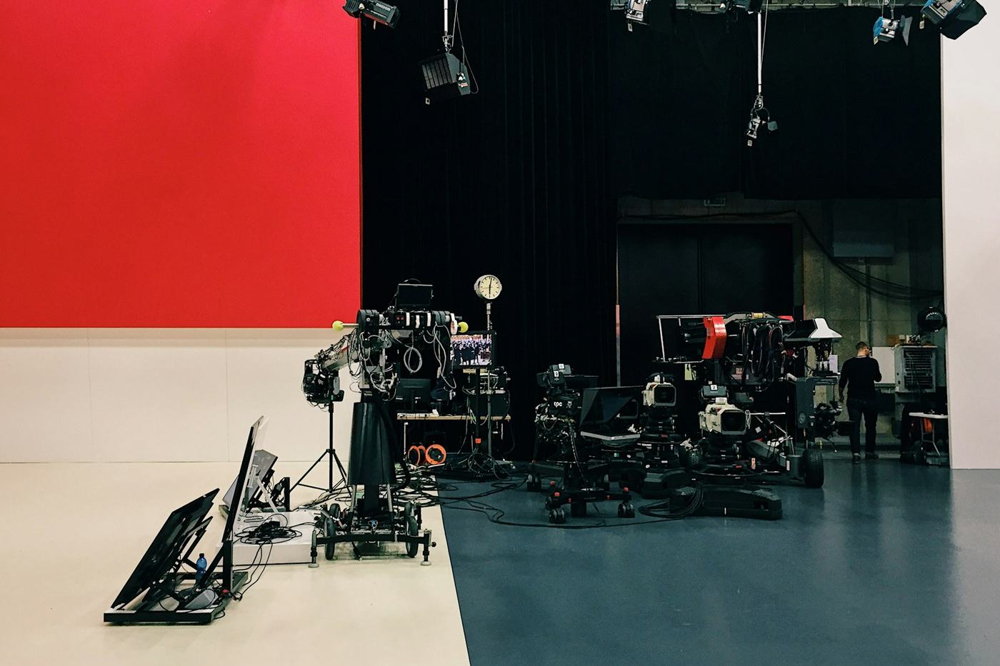
Working to the studio's clock
A broadcast and production environment runs to its own clock. We work around live floors and shooting schedules, keep studios, green rooms and edit suites presentable between takes, and hold additional manpower ready for shoot days and outside broadcasts.
- IBN 7
- CNBC
- Dainik Bhaskar
- APN News Channel
- ARRI Film Productions Pvt Ltd
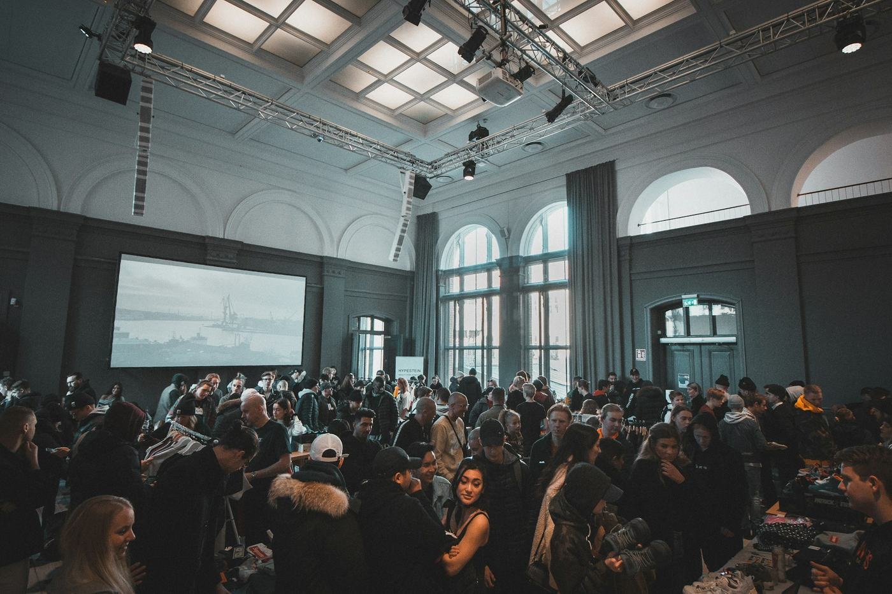
Manpower that scales up — and stands down cleanly
Events demand manpower that scales sharply for a few days and then stands down cleanly. We supply trained ushers, marshals and housekeeping crews for exhibitions, AGMs and VVIP visits, with supervision on site for the full build-up, show and breakdown cycle.
- Zak Trade Fair & Exhibitions Pvt Ltd
- Team Events & Productions Ltd
- Shree Events & Productions Pvt Ltd
- United Exim Expo Pvt Ltd
- Razac Expo
Why clients stay
The standard is held by our people — not left to you.
Outsourcing soft services to COPS should mean fewer attrition problems, less management time spent on housekeeping, and more of your attention for your core work.
Trained people, not simply workers
We supply trained and well-cultured staff for soft services. Our field supervisors are trained within COPS and carry the standard onto your site — so you are not the one policing it.
Every person approved and badged
No one is deployed on your premises until they have been approved and badged by COPS management. Uniforms and identity cards are part of the job, not an extra.
Low attrition, by design
Recognition and certification programmes for performers across our client sites keep good people with us — and keep familiar faces on your floors.
Green-building experience
We manage the ETT1 (NTPL) building, a green building approved by the US Green Building Council, and are fully conversant with the eco-friendly protocols an IT/ITeS complex is held to.
Ready for the big days
Specialised duty guards for large office events, and trained marshals for AGMs and VVIP visits — scaled up for the day and stood down cleanly afterwards.
A free survey before you commit
We walk your site first and propose against what we actually see, not against a template. The survey costs nothing and carries no obligation.
How we begin
From first visit to a site that runs itself.
Free site survey
We visit at a time that suits you and study your occupancy pattern, working hours and the standard you want held.
A proposal costed on reality
You receive a written proposal with deployment, shifts and rates — built from the survey, not from a rate card.
Badged mobilisation
Screened, trained and badged staff arrive in COPS uniform, briefed on your site's safety and protocol.
Supervised, reported, improved
Our own supervisors hold the standard daily. Consumables and attendance are reconciled and reported every month.
Clients
Trusted by 90+ organisations.
From hospitals and broadcasters to malls, factories and residential towers.
- Batra Hospital & Medical Research CentreHealthcare
- Cushman & WakefieldCorporate & IT
- J.C. Penney (USA), NoidaCorporate & IT
- CNBCMedia
- DixonIndustrial
- Times Square MallRetail
- Express Portico Hotel, Surajkund, DelhiHospitality
- Noida Towers Pvt Ltd (IL&FS Group Company)Corporate & IT
- Gold's Gym, Sector 128, NoidaFitness
- Dainik BhaskarMedia
- Jaypee Moonlite Towers, Greater NoidaResidential
- Sri Fort ComplexEvents
- Reliance (facade cleaning)Corporate & IT
- Sears (K-Mart USA), NoidaCorporate & IT
- ETT Group (Delhi & NCR)Corporate & IT
- Empathy Medicare (Dr Lal PathLabs, Sector 110)Healthcare
A word from the Director
Our strength has always been the quality of the people we put on site. We recruit for skill and bearing, badge every person, and hold the standard ourselves.
Harpreet Kaur BangaDirector, COPS Skilled Services Private Limited
Part of every contract goes back to the nation.
COPS is a group affiliate of The Indian Chambers of Human Resource. A part of our earnings is directed to the Government of India's Beti Bachao, Beti Padhao programmes for women and underprivileged girls.
Questions
Good to know
Is the site survey really free?
Yes. We carry out a free on-site facility management and security survey at a time convenient to you, at no cost and with no obligation, and follow it with a written proposal.
Are your staff verified before they are deployed?
Every person is approved and badged by COPS management before deployment. Field supervisors trained within COPS hold the standard on site.
What do your rates usually include?
Our standard proposals include statutory contributions (EPF, ESI and bonus) and uniforms, identity cards and badging for every deployed person. GST is charged at the prevailing rate, and cleaning consumables are billed at actuals unless agreed otherwise — reconciled monthly.
How does billing work?
Invoices are normally raised monthly in arrears. A signed copy of our proposal or your purchase order is enough for us to begin mobilisation.
Which areas do you serve?
We work across Delhi NCR, from our registered office in Chittaranjan Park, New Delhi, and our admin office in Sector 132, Noida.
Can you provide extra manpower for a single event?
Yes. We supply ushers, marshals, duty guards and housekeeping crews for exhibitions, AGMs, VVIP visits and corporate events, with supervision through build-up, show days and breakdown.
Let us walk your site — free.
Tell us about your facility and we will arrange a free, no-obligation survey, followed by a written proposal costed against what we actually see.